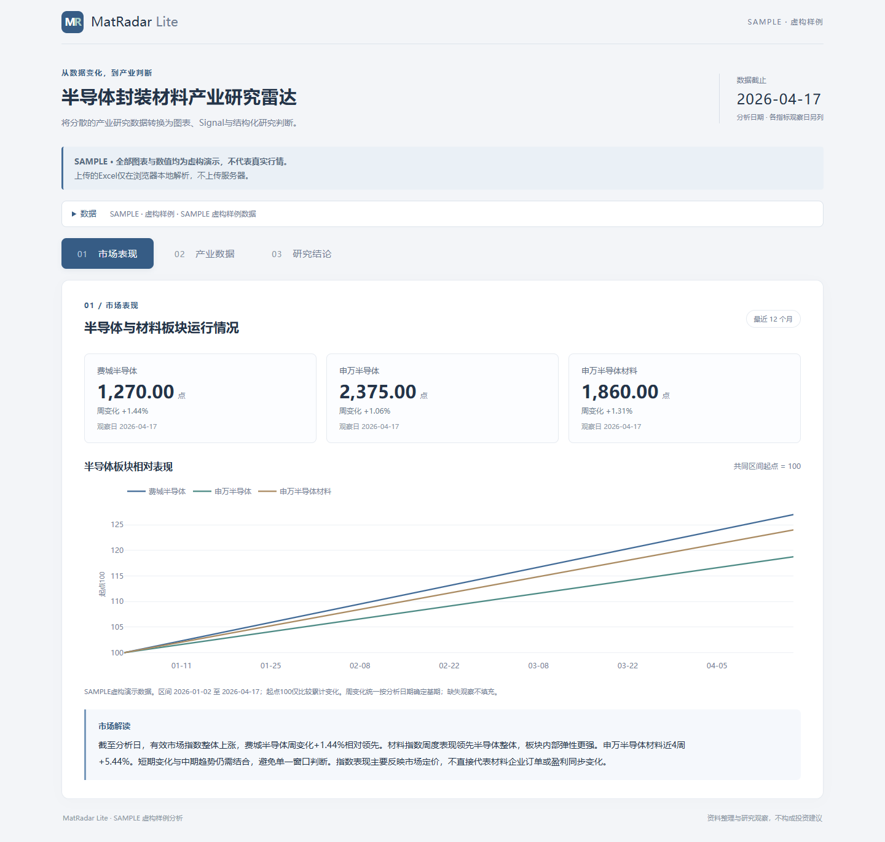

PROJECT PORTFOLIO / V1.0RESEARCH × DATA × PRODUCT
半导体封装材料产业研究雷达
MatRadar Lite
将周度产业研究工作流Agent化
将分散在Excel、金融终端和产业资料中的半导体材料研究数据标准化，
通过规则识别边际变化，自动生成研究图表和结构化分析。

产品实景 / 市场表现卡 · 全部数值为 SAMPLE 虚构样例，仅展示计算与研究逻辑。
01 / 场景原研究工作需要人工更新Excel并比较多类指标。
02 / 方法统一数据字段，通过规则计算识别边际变化。
03 / 交付输出市场、产业数据和研究结论三卡面板。
发布准备 Live Demo / GitHub：授权上线后生成，当前不提供未验证链接。
MATRADAR LITERESEARCH METHOD
从数据变化到产业判断
Research Workflow
数据负责计算，研究框架负责界定结论。
01DATAExcel / Market / Industry Data
市场、价格、贸易指标
02NORMALIZATION统一字段 / 日期 / 单位
隔离冲突观察，不填造缺失值
03SIGNALWoW / 4W / 3M / MoM / YoY
趋势 / 共振 / 分化
04ANALYSISFact → Comparison → Mechanism → Boundary
事实 / 比较 / 机制 / 边界
05OUTPUTCharts / Industry Analysis / Research View
图表 / 产业解读 / 研究判断
规则运行案例 · SAMPLE 合成数据 · 2026-04-17DXI ↑ 6.56%近4周变化
DRAM ↑ 7.84%近4周变化
价格端同步改善
两项4周变化均超过2%的上行阈值，程序据此识别共振。
不能直接等同于HBM需求改善传统存储价格传导至先进封装和材料订单，仍需观察产品结构、产能配置及客户认证。
Needs Validation HBM出货 / Memory Capex / Packaging orders
Research Discipline FACT ≠ INFERENCE ≠ RESEARCH VIEW
MATRADAR LITEIMPLEMENTATION & CONTRIBUTION
轻量实现，可重复执行
System Architecture
& My Contribution
系统架构
User / Excel
↓
Data Parser
↓
Unified Schema
↓
Signal Engine
↓
Research Analysis
↓
Static Dashboard
Public version
HTML / JavaScript / Plotly / SheetJS
Research engine · 私有开发版
Python / Pandas / SQLite
开发界面：Streamlit，未随公开版分发。
我的贡献
- 将既有新材料周度研究流程抽象为可重复执行的数据分析工作流。
- 设计统一数据Schema，将分散Excel指标标准化，明确日期与单位。
- 构建规则型Signal Engine，识别周度、月度变化及趋势与共振。
- 建立“事实—推断—研究判断—待验证信息”的研究约束。
- 完成Local-first Excel分析及静态Web产品化，无需商业数据库或API即可演示。
Project Highlights
Local-first ExcelNo proprietary database requiredNo API key requiredStatic deploymentReproducible workflow
在线入口 · 尚未发布已完成静态公开版与脱敏审计。GitHub 授权后创建公共仓库并启用 Pages；验证实际地址后再生成两个二维码及最终项目附件。本初稿不用于求职投递。